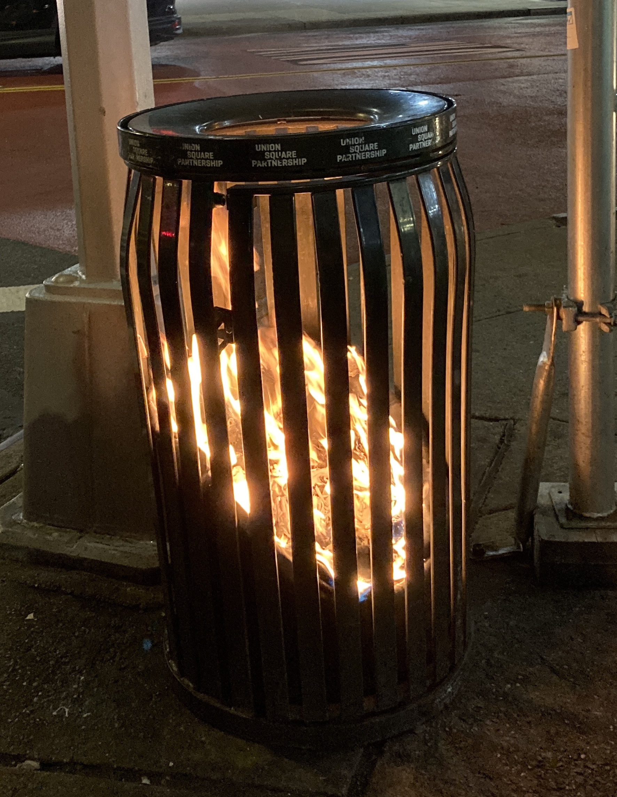
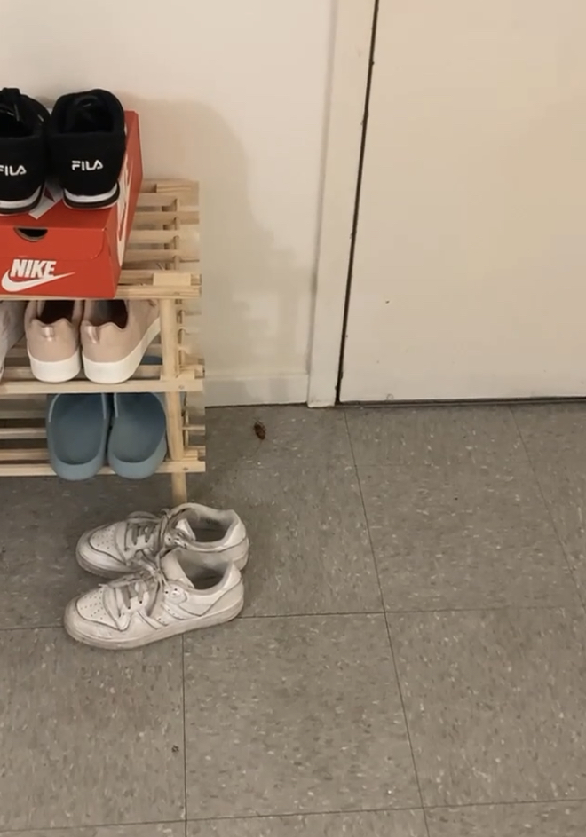

Top 3 NYC Moments
I was assigned to study at NYU New York last fall. Throughout my online spring semester, I've been reflecting on some of the NYC experiences from last fall that stuck with me the most.
-
(Contained) burning trash in Union Square
I feel like this is just very representative of the city as a whole
-
The cockroach that crawled under my door to die while I was eating
Buddy... that could've been accomplished in the hallway. Third North's location above a whole area of restaurants probably doesn't help
-
When Felix Morelo started drawing spots all over WSP

It was interesting to see how many people actually avoided them